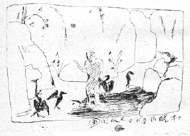

これはしかつめらしい小杉論でもなければ、小杉伝でもない。筆を執ると渋滞することなく手繰れたぼくの「小杉感想」である。ぼくは小杉さんについて矢張り余人よりは知ることが多いやうである。第一平素の交渉なり関心が深い。しかし小杉さんと最も古い頃からの知り合ひかといふと？ ぼくが小杉さんに辱知得たのは、所詮春陽会以来、ギリギリ四半世紀の昨今に止どまるから――これはかういつた書き方からいへば短かい月日であるが、しかし四半世紀、二十五年といへば、実は長い年月であつた。――ぼくは小杉さんの「往時」に関しては身親しくは識つてゐない。第一、年が違ふ。
――実はこの書きものは「小杉さん」などと却つて平素はぼくのその人を呼び馴れない名で書かうよりも、ぢかに「放庵」と呼びかけて書く方が、自然なのであるが、文中やがて明かなやうに、此の材料の人は、よく云ふ「二つ名のある」人なので、叙述に混乱の起る恐れがある。それで「小杉さん」といふ他人行儀な呼びかけを用ゐて筆を進めることにする。
ぼくはいつも小杉さんとアンリ・マチスの年ばかりは、自分の年を忘れない限り、忘れないけれども、ぼくとは一廻り違ふ同じ巳歳が小杉さんである。それから更に一廻り（十二歳）年長の巳が、アンリ・マチスとなるのだつた。ぼくより一廻り下の巳歳は例へば画壇では誰に当るものだらうか。これはつい気を付けて見たことはなかつたが、今年四十二の厄年は誰であらう。丁度その厄年明の小杉さんが春陽会を創立したのだつた。更にその一廻り下の三十歳の巳は現在誰であらうか。三十歳の年にはぼくやぼくの同年の中川一政は昔春陽会へ参加した年配だつた。そして三十歳からもう一廻り下の巳年十八歳といへども、その年でそろそろ今から画壇に出て来ようとするものはあることだらう。小杉さんも恐らくその頃ほひの年齢に郷里から東京へと志されたことだつたらう。ぼくは十八の歳には中学を卒業して、やがて白馬会の研究所へ通ふ頃、その前の年に（明治四十二年十二月）自由劇場が「夜の宿」を出したのである。ぼくなんぞの十八歳は「芸術少年」だつた。
小杉さんは第四回の文展（明治四十三年、三十歳）へ「杣」を出品して三等賞となつてゐたが、ヘンな言葉ながらこれが登龍門の小杉さんとしての第一関となつたやうである。「登龍門」はヘンな言葉ながら当時は文展も今日のやうなものでないから、字のまゝに登龍に値したらう。ぼくの誤聞でないとすれば、小杉さんはこの「杣」の前には、文展へ送つて「落選」の経験をされたらしい。「あの時分の落選は手痛いものだつたよ」と聞いたことがある。「それでハツプンしたんですなあ。あとは踏張りましてね」と、笑ひながら、目を細くして、話したことがあつた。小杉さんはまたかうもいつたことがあつた。あの時分には「対抗意識で仕事しましたね。対抗意識ばかり見たいなもんだ。こんどは一つアイツを乗り越してやらう。といふんでね」。
小杉さんはかういふ、自分事の話などされる時には、テレて……といふか、心持視線を相手から避けながら、殊更にあたま（ハゲアタマ）に手をやつたりして、ごちよごちよと端折つて、そのくせ要点はズバズバと、話をする癖がある。得て自分事の功名であるとか分の善い内輪話などを、「吹聴」といふ字でいふのがいゝが、吹聴することを甚だ好まない。かといつて、偽悪的かと見るに、さうではない。いふべきこと、例へば主張すべきことは、ちやんと通してゐながらも、心やり細いのである。――こゝに小杉さんの風格があるだらう。随分の大作が行き、また小点の行く「小杉さん」がそこにあるだらう。
小杉さんはぬけぬけした、或はズケズケした触りの微塵も無い人であるが、ふうはりした中にしまりのある、思ひやりの届く出所進退をよく弁へた、万事にキメの細かい人である。修養と意力によつてこれに適度の「断」があるであらう。
小杉さんの風貌は神経つぽいとか「弱気」とか「蒲柳の質」といふのとは異る。肩幅など頑丈な手足も骨格のしつかりした「豪放型」であるから、しつかりした豪放型からは、いはゆる「心臓」も太い、あらけづりのところが出易い？――に反して、小杉さんからはさういふものは全然期待することが出来ない。この辺のがい切な観察はつとに故人の芥川龍之介が小杉さんについての短章の人物論に、はつきりと述べたことがあつた。小杉さんは粗野とは正反対の Education Sentimentale「訓練」を身につけてゐる人である。半ばは後天の収穫によると共に、一半は、さういふ天資だらう。
ひよんなことからいきなり小杉論の中圏に筆を入れたけれども、鏑木さんがある時「人と話をするのに相手方の立場なり心持となつて話をしたり聞いたりすることはむづかしいものだ」これを心がけようと思ふといふ旨の述懐を記されてゐたことがある。小杉さんもかう思はれるや否や、ぼくの見るところでは、小杉さんはよしんばこの反対にしようと考へても、それより一足先きに、行為心操は「相手方の立場なり心持となつて」人と話をする人である。話をして来た人である。
小杉さんは相手の強さ或は不正不当に対しては十分に靱ふ訓練を持つてゐるけれども、相手が弱く殊にそれが正当な場合には、見る見る「負ける」面白さを持つてゐる。相手が強く且正しい場合には襟を正して迎へ、若いものに対してさへその履をとることを辞さない、心を無にすることを――これは「人」に対する相対的でなくとも、予め「天」に対して――識つてゐる、間違ひの無い人物であるが、涙もろい話など持つて行けばほろりと陥落するをかしな人である。ひとに騙されたことなどもあるであらう。人を騙すことは無い人であるから、被害は決して大きくないのである。岡倉覚三さんは、人は媚び諛らふものを避けるといふけれども、阿諛者は可愛いもんぢやないか、と、豪然嘯いたといふことだが、小杉さんにはさういつたべらぼうな危険性はない。壮年にはこの種の冒険を猟奇したことはあつたゞらう。
小杉さんは歴史を引くり返すとか、或は芸壇の屍山血河を大刀提げて乗り越えるとかいつたやうな、闘気熾んな「大家」ではないであらう。これに反して人間的、滋味豊かな、慈味を人生に学び取つた「賢人」の一人と考へる。小杉さんのやうな学道を採る人は画壇にこれから先きまづさう第二第三とは容易く現れまい。その学道――いひ替へれば小杉さんの人生を学び取るためには、これぞ「修養」といふ字でいへる、卑近にいへば「本を読む」修行が、また、絵をかくことと並んで並々ならぬ期年を要するからである。小杉さんの学問はその十中八九まで古代支那に参ずるところに基礎があると思ふ。（これに加ふるに和文。――却つてヨーロッパの脈は、殆んど少ないところに、今日から見れば特徴を帯びた。）芸文のものよりは史学に大多数の興味もあり、ゆかりも深かつた「修養」ではなかつたか。ぼくは画壇の人々にはいふまでもなく、その他の人から推しても、小杉さんまで漢籍をよくこなして読み込んでゐる人は、異例になるだらうと思つてゐる。これを「趣味」や嗜みと見ようには過ぎるのである。小杉さん自身は決して「学問」とはいはないだらうけれども、寸毫ためにする読書でないところにいはゆる「書巻の気」が直接その人の血になつて、小杉さんの内に流れてゐるし、小杉さんの外へ流れる。相当浩瀚の史籍も小杉さんが愛情を籠めてその話をするところを聞くと、珠玉のやうに、いつも掌の中に存するやうだ。今後となつては、この「型」は益々無いことだらうし、今日に見るも、小杉さんの如き籍中の人は、稀である。
誰でもおよそ生活を五十年の上に持ち越さんがためには――殊にこれをピンと張つて――何がな一本勝負で食ふか食はれるかに立ち向ふものがないことには、持てないと思ふが、恐らくは退屈か、倦怠か、老衰か……に堕ち込むのが末で、なかなか時間と精神とをまつたうに永くは人は持ち越しにくいものと思ふけれども、立ち向ふ目標と定めたものが大きく、困難ならばそれだけ、その人はそれだけしつかりしてゐるやうである。――小杉さんは画学については、ヨーロッパでルーベンスあたりのものを見た時から指針を感じて、一般の洋学するものは「油絵」のアブラくさゝを真似にも身に付けようとするのを、小杉さんはこの「アブラくさゝ」を仕事から逆に抜くことに目標を持つたやうである。ぼくの耳食がもし間違ひだつたとすれば取消すけれども、小杉さんは、たしかルーブルでルーベンスを見て「これは日本にはいけない」とつくづく感じたと話されたことがあつた。僕はさう覚えてゐる。この「日本人にいけない」の「いけない」は「行けない」の意味も伏在するだらうが、正面の意味は、「不可」の「いけない」であつただらう。
脇本楽之軒氏は世界美術全集の（第三十二巻。第七十六図）小杉作「水郷」について「向ふ鉢巻の漁夫が小舟の中に立つて網を始末してゐる図で、シャヴァンヌの画趣があるとは、第五回の文展出品当時、某々批評家等が筆にしたところ……」といつてゐるが「シャヴァンヌの画趣」は当時作者の筆端に寧ろあるべき自然だつたのではないかと思ふ。小杉さんがヨーロッパへ行つて捕へた「画趣」の一つの粉本は、シャヴァンヌが一番身近かつたらう。

未醒作「うがひ」見取図
後に小杉さんは院展の大正四年春期展に――この絵は特にこれをこゝに引用する意味ではなく、偶々手許に図柄のよくわかる複製があるので、いふことが書き良いから、そして結局書くことは他の小杉さんの代表作についていふところも同じになるから、便宜上、これについて述べる――「鵜飼」といふ絵を出してゐるけれども、この仕事は「構図」とその装飾意義に画因なり仕事の趣意の大半のあるもので、これを構成するメチエはまた「線」に大半を負ふものであるが、評家のさきにいつたといふ「シャヴァンヌの画趣」は脱したもので、日本的となり同時に小杉的となつたものである。そしてそこに功罪倶にあるものと思ふ。「功」は作者が洋学をこなしてこの新地開拓に至つた点にあること、申すまでもなく、また「罪」は、その洋学からの脱却し方にある。作者の個性、あるひは境地は逸早くこの脱却し方に依つて樹てたらうけれども、「絵画」の本質は、これによつて多く得たか或は損失したか、暫く疑問としなければならない。
次のぼくの耳食も亦聞き誤りなりとすれば改めるが、小杉さんは「油絵の写生といふ奴が苦手だつた」。これは、ダプレ・ナテュールのリアリズム或はナテュラリズムを意味したものであつた。
脇本楽之軒云。「筆者（小杉氏）はこれよりさき夙く漫画家として名を揚げ、純粋の画家としては未だその才を世に示すことがなかつたのであるが……」と。これは「水郷」以前（三十歳以前）の作者になぞらへていふところである。「小杉さん」即未醒はそれまでに漫画家あるひは草画家、さしゑ画家として、鳴らしたことは、どうかすると今でもその「小杉未醒」の響きを人の口にすることがある程、博大だつたものだ。小杉さんといふ人は、一身を二体に分けて前後に「未醒」と「放庵」とを持つてゐる人であるが、「小杉未醒」は古い人である。数へれば今から二昔前の、それより更に前の四半世紀にかけて、画壇に活躍し、且人口に膾炙した名が「小杉未醒」であるから――小杉さんにしても、往年を顧れば感慨少なからぬものがあることだらう。
少時日光で五百城文哉先生の門にあつた頃のことを暫く措く。笈を負うて東京へ出てからの小杉さんは、正規の画学を小山正太郎先生の不同舎に参ずる傍ら、思ふにその二十代の小杉さんは、五百城先生の門について絵だけでなく漢籍詩文の素読から叩れた骨がモノをいふと共に、向上心に富む求道の心常に熾んな人の、それが懐ろ手をしてたゞ絵の勉強だけをして居ればよい小杉少年ではなかつた以上、先づ印刷刊行のものに向つて絵の仕事をすること、同時に文の仕事をすることが、小杉さんの前に展ける一路の公道であつたらうことは、極めて自然だつた。それで小杉さんは大いに、草画を描きまた大いに文章をかいたのである。小杉未醒が当時雑誌や単行本で「かきまくつた」ものの数は、汗牛充棟もたゞならないとよくいふ、正に今これをぞつくりと目の前に積まれゝば、驚くべき嵩になるだらう。
逆にこれを今から歴史風にいひ返せば、わが「小杉未醒」はそれでさしゑ及び漫画の先達といふことになつてゐるけれども、これは若い小杉さんの当時ひとりでに迸つた才能だつた。勿論並ならぬ努力はあつたに違ひないが、別段期してさしゑなり漫画に先達の道を展かうとしたわけ合ひとは思はない。ある程の仕事、来る程の仕事を、片つ端から「退治た」業績と見るべきものである。結果としてこれが、儕輩を抜いて水際立つたといふことが、いやおうなくといはう、小杉未醒を、さしゑ画家、漫画家の大に仕立てた。――そしてこゝに小杉さんの「初期」が始つたと思ふ。同時にその風袋をもつて画壇に臨んだ。
初期といふものはそのまゝでは誰しもさだかならぬものだが、しかしこれを三つ児の魂ともいふか、その人の「筋」は必ずその人の初期を見ると、現れてゐる。これがコハイし、面白いものである。――ぼくのいひたいのは、小杉さんの「初期」を見るといふと、その漫画に依らず、さしゑに依らず……何れも、絵に装飾才能の分子が十の中八までを濃厚に占めてゐるといふこと、言葉を替へていへば、形似描写風の仕事よりも象徴風のカタチが絵の中に著しく強いことである。
小杉さんはさういふ仕事――この「仕事」とする字の意味は Work よりも Task の分子の多いものとして良い――をする一方に、これは Work または Study の意味としての、絵の正則な勉強を、片時も撓まなかつた。これは仕事のカタチからいへば、小杉さんの得意な象徴装飾風なるよりはどつちかと云ふと苦手の、形似的写実風のものに絵を導く過程だつたらう。小杉さんとしてこれは楽な或は楽しい画学であるよりも、苦しい勉学であつた方が多かつた過程に違ひない。
後に外国へ行つてからも、欧洲風のアブラ絵が日本の、――小杉未醒の――肌合ひに適さないことを身を以つて感ずるに至る実感までには、「苦しさ」の鞭が、十分、小杉さんの骨身を徹した、その上での、いのちをかけた頓悟だつたと思ふ。仕事から「アブラ」を抜くことは。
小杉さんは諧謔を以つて自分のハゲアタマのことを、渋々と、しかし面白さうに、宴席の芸妓どもなんかに、話すことを常とするが、ヨーロッパでボルドーの宿屋かどこかで朝起きて、洗面台に向ふといふと、梳る櫛の歯にからんで髪の毛がぞくぞくと脱ける。「――そんなわけで、段々無くなつて、こんなになつちやつたんだよ」アハ……と小杉さんは笑ふ。が、フランスで大々の油絵にひとり取り囲まれながら、毎朝髪を梳くと、束になつて頭の毛が脱ける。その環境と分別の中で断想した油絵否定、リアリズム否定が、作家「小杉未醒」の骨格を新規まき直しにする心であつたらうことは、推するに難くない。しかも意識は「否定」したはずのリアリズムを小杉さんが実は魂の底まで食ひ込まれて、荷ひ帰つたことは、知るや知らずや。――小杉さんは満谷さん（国四郎氏）と同行の旅であつたが、満谷さんが「歩に返つて」向うの作家（この個有名詞は忘れた）のところへ仕事のＡＢＣから基礎をたゝき直しに「弟子入り」しようとした時、小杉さんはいつたといふ。「それもいゝが、お互に日本ではシヨセイではない。一考は要るな」。言葉は違ふであらうが、意味はかういふことである。
やがては日本の大家を約された人達のその頃フランスに洋学した姿として、満谷さんも面白いし、小杉さんも面白い。小杉さんは「見識」を以つて――といふのは、必ずしも「手」からは行かずにアタマで――指針を掴んだのである。
そして小杉未醒は「画道」を発見して外国から帰つたのであるが、「小杉未醒」はそこで完成した。すでに漫画家未醒でもなければ、さしゑの未醒でもない。竹の台五号館の壁に左右上下両手を拡げても猶余る画面の行く人となつたのである。――ぼくはこゝで小杉さんの発見かつ完成した「小杉未醒」が、作家として何を一番獲たかといへば、大作の行く斯道を掴まへたことが、一つには画壇へのこの人の寄与であると共に、その人自身の十分な加餐であつたと思ふ。小杉さんの天性備はる装飾才能を大軌道へ乗せて押し出す恰幅を備へたのであつた。ぼくはこれを、小杉さんの第二期「中期」と見る。壮年期としても良いが、これが次の「放庵」に変るまで続くものである。会でいへば春陽会になるまで、時でいへば昭和になるまで、作者の歳でいへば四十代一杯まで。
あるひは絢爛とか、くだいていふバツとした、また颯爽とした……小杉さんの「時代」は、この「中期」にあつたであらう。配する大観さんがあつたので、そこに繰り展げられる豪華版の東海道道中なども、未醒伝の貫禄にかけて荷の勝つものではなくなり、昔二十四の時（明治三十七年）戦時画報社からその腕章を付けて満州の戦線へ派遣された時には、
未醒ガ此行ノ携帯品中、尤モ用ヲナセシハ兵卒ノ使フ所ノあるみにゆむ製ツル付キノ行厨器ナリ。飯ヲ容ルル二三食分悉ク提ゲ得可キハ第一、第二鍋ノ代リトシテ湯ヲ沸ス可ク徴発ノ南瓜豚肉ヲ煮ルベシ。第三蓋ヲ煙草盆トシテ煙管ポンポンナドノ便アリ、第四舎営ノ夜半ニ筆ヲ揮フトキ蝋燭立トスベシ、第五ハ即チ枕ノ代理而シテ彼ノぴすとるニ至ツテハ、幸ニ吾常勝軍ニ従フニ依ツテ徒ニ行李ノ重量ヲ増スノミ、更ニ一分ノ用ヲモナサズ。依リテ行厨器ヲ功一級トナサバ、ぴすとるハ応ニ位記返上タルベキカ（戦時画報二十三号）
小杉さんの同僚には、木村半心、芦原録、水島南平、岡部天籟、かういふ人々があつて、皆筆硯忙しく今日の字でいふ「報道班員」の仕事を競ひ合つたものだつた。――やがて、十年後の「小杉未醒」と、昔の同僚とでは、（小杉さんがこしらへたものではない）遠い開きが付くことになつた。ぼくはしかし「完成した」とはいつたけれども、美術を完成したとはいはない。小杉さんは先づ、「未醒」を完成したのであつた。そしてぼくに暴言さすれば、これが余人だつたら、小杉さんは颯爽絢爛たる「未醒」の幕の中で、相当安らかに眠つてしまふこと無きにしもあらず、小杉さんに美術と人生に対する求道が乏しかつたならば、到底人はよく「小杉未醒」から「小杉放庵」へと再蝉脱することは出来ない。普通人生ではこれは考へられない。「未醒」既でに画壇の大名である。しかし美術から云へば、到底「未醒」までの見識、発見、業績、態度では尽さなかつたところを、「放庵」以後の小杉さんには、――こゝに注意すべきは、その時小杉さんの手に持つた彩料は、洋彩でなく、和彩だつたといふこと――ぼくは小杉さんの描く油絵も、少くも、春陽会以後のものは「洋画」とは考へてゐない。立派に「和画」だと考へてゐる。ここに至つて、美術があたかも返り咲きの花のやうに燦々と咲いた。あるひは二曲屏風に桜の若樹を写したものであるとか、岩とか、鳥とか、殊に方寸尺の小点のものに多い覊旅の心尽しや道釈人物に、津々と筆路の深く美しいものがある。
小杉さんは交りものゝ無い日本画材料によつてこれを描く人となつた。いはうなら「日本画家」小杉となつて、これまでの日本画、洋画双方を踏まへた「未醒」を脱却したのである。一体われわれの言葉の、この日本画家洋画家といふ語彙は、わるいものである。こゝにも奈何せんそんな言葉なり観念があるので、ぼくも持廻つて冗説するものゝ、実は、殊更に「日本画家」放庵となつたとはいはなくとも良い。小杉さんは放庵と号する頃ほひから、とみに純粋な絵かきに再発足したのであつた。――少くともそれ以前の小杉さん、小杉未醒は、日本画にまれ洋画にまれ、絵画そのものに非力を免れたとはいへなかつたものを、こゝに五十歳の峠道をのぞんで「純粋」な絵かきに再発足し、変貌した小杉さんが、日本画家としてだつたといふことは、画人小杉の性格であると同時に、宿命とすべきものだつた。ところが更にわれわれの注意すべく、特に指摘すべき、こゝに、「画人小杉」の上の新しい出来事、これぞ「彼」が「放庵」へ変つた、最大の意義があるのは――筆路にリアリズムの再誕生したことである。
これは「画人小杉」の歴史の上での奇蹟と呼ぶも差支へないであらう。ぼくの考へでは、この奇蹟は、小杉さんが相次ぐ三越で催した毎年の小さからぬ個展のきつかけから、花鳥ものを始めたことがある。その場合が機縁だつたと思ふのである。そしてこれを始めるや小杉さんは――院展における未醒時代の大作油絵のやうに、効果を大幅ではあるが深さは浅く、画面へ浚ふ。――この行り方を採らずに材料の中心を目ざして、筆を立てゝ、真直ぐ食ひ下がることをやり出した。横に塗らずに竪にかくことをやり出した。
洋画法ではこれをやらうとしても「苦手」でやりにくかつたこと、ヨーロッパでは一旦その人の「意誠」を以つて見捨てたこと、リアリズムを、これと四つに組む捲土重来の姿勢で日本画家「放庵」は――ぼくをして敢ていはしめよ。彼はこゝにその志望を達したのである。
写実が絵の仕事の窮極だといふ意味ではない。「絵」はそれとは又別であるが、画人小杉に写実の花咲いた目出度さをいふ。――学而時習之不亦説乎の「習」といふ字は、鳥の雛が巣立たうとして下に玉子の殻（白字）を踏まへながら、不断に空へと羽ばたき羽ばたく象ちだといふけれども、小杉さんは、五百城先生の巣から羽ばたきとんで、先づ草画家の風を得、その未醒時代には、また如何に羽ばたいて、草画家の殻を脱けようとしたらう、更に放庵に代つて、またまた如何に羽ばたいて未醒を脱却したらう。これ「小杉さん」という求道飽くこと無き人の、有り態の姿だつたのである。
小杉さんは先づさしゑ、漫画の大であつて次に華々しい画壇の雄であつて、「大家」で、やがて「元老」で「会員」で……あるが、それは泡沫の事々である。たゞ大切なのは、小杉さんが末始終美術の中の人だつたといふことで、されば「未醒」から「放庵」への不可能に近い再蝉脱も血気壮んな壮年期の旋風の中でその風に浮かずに、見事やり遂げた。――今や平安来る。「放庵」は小杉さんの第三時期、やがてその軌道を以つて小杉さんは「晩年」に移行するのであるが、この道に至つて、行けども行けども窮まらないだらう。
されば何が目に見えて未醒から放庵へ「変つた」点かといへば、明らかなのは「線」の変化である。――一体小杉さんの画歴は、終始「線」の歴史だと見てよいと思ふが、小杉さんの初めの仕事にある線は、その絵の構図本位に（あるひはいふ、装飾意図のために）引かれてゐるものは多くとも、対象の諸相に対して（写実と非写実を問はず）直かに引かれた線は少なかつた。線が締めくくる急所を避けて、たるみ、遊ぶものがある。初期、「未醒」時代の草画、漫画の画式はさう出来てゐたやうである。
石井柏亭氏はその著「日本絵画三代志」の中で小杉さんを叙する件りに、「『降魔』などから見ると第四回文展の『杣』や、その翌年の『水郷』などは大分垢ぬけた処を示してゐた。けれども其人物等の外廓線にはある癖があり、大正元年の『豆の秋』になると何かコマ絵を拡大したやうな感じが勝つてゐた。……」といつてゐるけれども、「豆の秋」には石井さんの慊らないところに同時にこの当時の小杉さんの特技も同生することを見逃せないと思ふのは、「構図」（装飾意図）の成功である。「水郷」の線には初期未醒の線は余程清算されあるひは浄化されて、「たるみ」「遊び」あるひは低徊がない。まつたうに画象を通じて自然から引かれた線になつてゐる。――「この自然」からといふ個処は「美感」からといひ直してもいゝが、何故なら、この絵の作者未醒は必ずしもダプレ・ナテュールの人ではないのであるから。
柏亭氏が「其人物等の外廓線にはある癖があり……」といふ。この「癖」と名指すものは、小杉さんが楽にかく時にはそれの出てくるものであり、しかしこれがあるために、一方大手の仕事が行くし、それが装飾的象徴的効果にのびる、この作者の得手に働いたこと、少なくない。しかし若しこれが撓められずにゐたとすれば、「画人小杉」はこの線のために自繩自縛にかゝつたかも知れない、安易道のものである。――作者の求道心は、この仕事の叢にすむ蛇ともいふべきものを、時と共に、善処始末した。
死んだ外狩素心庵は小杉さんが水墨の仕事に麻紙を愛用するについて、一方その効果を認めながらも、一方その欠点を衝き、一頃小杉さんがよく破墨を麻紙のザラ目の紙面（つまりそこに抄き込まれた麻の繊維）につゝかけて、絵の「味」を出す手法を採つたことがある。このやり方は、見た目の「味」のために肝腎の「素描」を殺すことだといつて、惜しんだことがあつた。――後の放庵には、このことは無いのである。
また院展に出た「鵜飼」のやり口は、のびることはこの線でどこまでものびる。たしかにそれは大作画法として一つの必要なスタイルに相異ないと思ふけれども（求心的に絵の素描は立てず、遠心的に装飾で効果を大手にまとめて行くこと）、たゞくゝりが無い。扇子に例へれば、いゝ骨だし展きも見事なものだが、要の弛いために、がくがくするやうなもの、骨格の弱体を蔽へない仕事振りだつた。――やがてこれも亦「放庵」には反省され、是正された。
前に「登龍」とヘンな言葉を使つた小杉さんの行路は、文展三等賞の「杣」につゞく「水郷」（第五回文展、明治四十四年）と「豆の秋」（第六回文展、大正元年）が相次ぐ二等賞となり、水郷について楽之軒云、「この作によつて一躍新進作家の首班に列し、翌年「豆の秋」を出すに至つて画壇における位置は確立した」と、この文章は、この通り肯つて良い、作家「小杉未醒」の壮年の行程だつたのである。
小杉さんの行路は院展洋画部創立（大正三年）の頃から、年益々、幅の広いものとなるのだつたが、仕事はいよいよ油絵のアブラくさゝを遠ざかつて、素材そのものも、日本画法によるところが多くなつてきた。洋画風の道としては、イーゼル・ピクチュアよりも壁画風なコースがこの人の任となつたことは、自然の推移であつた。
壁画には自らこの仕事に記念塔を打建てる意気込みの、自ら仕事を買つて出た、帝大講堂のアンビシャスな仕事振りがある。（大正十四年）――この作は恐らく日本最大の壁面を絵で扱つたものだらう。作者もまた、人に仕事を見せよう、等々の発意よりも、その尨大な画面を「絵にして見よう」と思ひ立つた無垢のところに、この画因の素直な胚胎を認めて、着手したものである。
相当暑い夏にかけてのことだつた。小杉さんは水谷清を助手に使つて、帝大構内の、何か洞窟か何かのやうだつた、関係者以外には人の一人として知らぬ、ガランとした仕事場で、前後百五十日の間、毎日朝から日の暮れるまで、暑さの真盛りはシャツ一枚で、この壁画を描いてゐたものである――ぼくにもう一言余言を加へさせれば、描いて楽しんでゐたものである。
壁画はアーチ形のもので、高さ三間強、幅五間はあつたと思ふ。確実な寸尺は今手許に控へが無いが、余事ながらいひ添へれば、この大仕事は作者の奉仕だつた。作者は一意仕事をする大きな壁が欲しかつたのである。
老来小杉さんは枯淡になつた筆路に、この十年方前からは、打つて変つた緻密な「写実手法」を十分楽しみながら、年益々「日本画法」の堂に参じつゝ、今に及んでゐる。そして最近年は（現在はといつても良いだらう）、ぼくに与へた最近信にいふ。
「……安土
 見寺のフスマの絵は扇面に信長の幕下の諸将をおきたく思ふ。御手元にあの頃の大紋姿甲冑姿の参考あらんと思ふ。お貸し下されずや。此前戦災にて借用参考書焼きたり。千万すまぬ次第なり。コンドは焼きません。十、十九（昭和二十一年）、放迂」。（小杉さんは手紙の署名にいろんなことを書いて来る。昔は半禿、近頃では禿、放禿、迂禿、放迂、山翁……等）しきりとこの節は人物画に心動くやうである。この小杉さんの老境は、多分これが一番面白い作家の境地の一となりつゝ、また更に渋く、枯れて、為ることが心の円輪へと沈潜してゆく順路だと考へる。――先生の静かなる老境に幸あれ。
見寺のフスマの絵は扇面に信長の幕下の諸将をおきたく思ふ。御手元にあの頃の大紋姿甲冑姿の参考あらんと思ふ。お貸し下されずや。此前戦災にて借用参考書焼きたり。千万すまぬ次第なり。コンドは焼きません。十、十九（昭和二十一年）、放迂」。（小杉さんは手紙の署名にいろんなことを書いて来る。昔は半禿、近頃では禿、放禿、迂禿、放迂、山翁……等）しきりとこの節は人物画に心動くやうである。この小杉さんの老境は、多分これが一番面白い作家の境地の一となりつゝ、また更に渋く、枯れて、為ることが心の円輪へと沈潜してゆく順路だと考へる。――先生の静かなる老境に幸あれ。放庵はそんな具合に事業を辿つて来た人であるが、こゝにぼく後生の断想を一顧すれば、小杉放庵は必ずしもその生活行路（生活内容）の一本勝負を「絵画」ばかりとまともに切先きつけて来た剣士ではなかつたといふことである。寧ろ絵画を便道として構へながら、志す一本勝負の的は、「人生」そのもの、そのものゝあはれ、苦楽一如。これに狙ひ定めた、いはゞ僧形の剣士の風格は無かつたらうか。
そしてその「的」こそ、余人は知らね、弱冠五百城先生の門を走つて東上してこの方、あるひは多忙多労の草画士となり、風物詩画をものし、水滸伝を描き、戦のたゝずまひを叙し、中頃文展興隆の機運につれて――これは丁度鏑木清方氏と同じやうな行路に――一転「大」となり、更に斯界の「大々」となりながら……画壇四十年のこの人となつた、小杉さんである。
しかし小杉さんの目的そのものは、斯界の大々となるも何もない。画客の大とならうことさへ――壮年、中年の頃はしらず――近年の小杉さんは考へてゐなかつたらう。思ふに一路絵の仕事の念仏唱名を通じて人生の仏果を得たいと、この長い修行に、心を傾けて来た。
小杉放庵は、当代の高士だと思ふのである。あたら歌舞伎の法燈も羽左衛門を失つたことによつて先づ歴史の一段落と思ふ。わが文人画道の正しい法燈も、当代小杉放庵がなければ、その燈影は殆んど微々奄々たるものだと考へざるを得ない。――小杉さんの存在は貴重なものとなつた。先生の加餐を念ずるや切なるものがある。
近頃の好季節に、小杉さんは、赤倉の、温度も滅多に八十度とは上らない山の中で、鳥の声や、草々、身辺の奇巌、いはなの棲む渓流。その中に悠々自適するのであるが、過ぐる戦災に、東京の家や諸調度の類を失つたことは傷心なるも、就中本を焼かれたことは、ぼくなんかもこれを思ふ度に、困つたことをしたと痛心する。よそごととは思へない。再三北京の瑠璃廠あたりを漁つて過去何年かに渉つて蓄積された、ちよつと二度とは手に入れにくからう本ばかりであるから、弱つたと思ふ。いや、小杉さんとしては、定めしこれが戦災の最大の痛手に相違ない。
小杉さんの老友に公田連太郎先生があるけれども、淡々として公田さん曰、私は多分君より先に死ぬであらうから、死んだら、私の本は、そつくり君のものとしてよい。しかし死ぬまでは貸しておいて貰ひたい、と。
小杉さんはかういふ友達を現実にもつてゐる。或はもつことの出来た、人間最大の幸福の所有者の一人といつていゝ人である。公田さんもまた小杉さんを介して逆に同じことのいへる、当代の高士だ。――思ふべきは、こんな竹林の中の世界が、ちやんと「小杉さん」といふ人の環境裡には、手堅く成り立つてゐるといふ、驚くべく羨むべき昭和二十一年の身辺の現実であらう。
小杉さんはずつと友達運のいゝ人だつたが、それが又（結果から見ると）友達運に薄かつたともいへる不思議な縁をたどつたことは、押川春浪、国木田独歩、中沢臨川、今村紫紅、森田恒友、倉田白羊、（追記、山本鼎）、好友ならざるなし、しかしその一人々々と、ぼつぼつと、別れて来たのだつた。それかあらぬか、森田さんの病篤い時だつた。倉田さんの時にもさうだつたが、その亡くなられる前から、小杉さんは、森田は死ぬなァ、または、倉田は死ぬなァ、死ぬなァと、その人の話の出る度に、その時病ひ篤かつた森田さん、倉田さん達の「死ぬ」ことばかり口に出していつて、僕など、返答に困ること度々だつた。そしてこれは聡慧流水の如しと雖も、小杉さん自ら気がつかれないことには、小杉さんはその都度、実はまだあれに死なれてはたまらないなァ、やりきれないなァ、と心に切々と、深々と、思ひ溢れてゐる。されば逆に言葉に出して、最悪に対してしきりと伏線を張りながら、寂しさを撓めてゐたのである。撓めて堪へきれなかつた小杉さんのジェステュアだつたといへると思ふ。――これらの盟友と次ぎ次ぎに別れて来た苦盃も、小杉さんの人間を慈味に深い、思ひやりの細かな風格としたゞらう。
小杉さんは日光の人であるが、関東は地つゞきのかたぎもあらうか、殊に教養経験の数々、筋々が、皆まつたうの場所を踏んできてゐるところから、全然、僻遠の地の人の風はない。大江戸残党の苦労人といつたやうな滋味のある、イキなオヤヂである。（若しそれイキゴトに至つては、御膝元の鏑木さんよりも、ワカル、悪老、日光の放庵だ。）小杉少年が五百城先生の膝下から東京に出たのは、折柄紫派の波が中心地に盛んな頃だつた。却つて五百城先生はその渦中に投ずることを欲しなかつたといふ。
さうして小杉さんは東京へ出ると、紫派の一敵国であつた不同舎に就いて――いつのことだつたか、後年何かの講演？で和田さん（英作氏）と一緒の席だつた時に、和田さんの講演に次いで小杉さんが一席、こゝにおいでの和田さん達、紫派の諸将に対しては、自分は、クソ！と、目の敵にして対抗したものだつたと、話をされたことがあるさうである。和田さんもまた笑み崩れて聞いてゐて「面白かつたよ」と小杉さんはこの話をしながら、たのしさうであつた。
小杉さんは有情多感、一頃は大いに呑んだ。ある時一升壜の酒へ生きた蝮をそのまゝ突つこんでこれを床の間へ安置して寝たところが、「蝮が壜の中であばれたらしいんだな、夜中に壜ごと引くら返りましてね。そこら中に酒は流れる、蝮は這ひ出す。イヤ閉口したことがあるよ」といふ。壮年錚々たる天狗クラブ党中の闘将であり、また、多年にわたつて、庭球はポプラ倶楽部の現役メンバーだつたことは、知る人ぞ知る。小杉さんの老来いよいよ衰へない健康は、このテニスや、これも多年の山登りなどの鍛錬から来てゐるだらう。小杉さんはまた好んで煙霞の人だ。日本本土は殆んど行つてゐないところは無い位だらうし、支那へも数回往復してゐる。
ぼくは故五百城先生の奥さんと小杉さんの田端の家でお目にかゝつたことがあつたが、小杉さんが手を引かんばかりにして、品のよい老夫人をぼくに紹介されたのであつた。小杉さんは五百城先生の遺文詩集を出版されたことがあつた。小杉さんの画室には始終五百城さんの日光の滝を描いた十二号程の油絵がかけてあつた。
小杉さんの家の紋どころが四ツ目、小川芋銭さんが四ツ目、ぼくがまた四ツ目で、紋の話が出ると、よくこれは話題になつたものだつたが、互ひに穿鑿すれば、その上は佐々木高綱あたりと関係があるものかどうか。
「小杉未醒（後放庵と改めた）は日光で五百城文哉についたあと不同舎で学んだ人であるが、略……作者その人に豪放な所があるやうで感傷的な一面もあるのと同じやうなものが、その作品の上にも窺はれるのであつた。」これは柏亭氏が日本絵画三代志の文章を結んだ言葉である。
小杉さんを「未醒」と呼ぶ人はやがて少くなつて来た。とはいつても、「小杉未醒」がなくなつたわけではなく、小杉さんをいまだに「小杉未醒」と呼ぶ方がなじみの深い古友古識の人々はあることだらう。現在の小杉さんからは殆んど完全といつてよい程旧の「小杉未醒」はぬぐひ去られて、新「放庵」と化つたのであるが、一体「小杉未醒」と称するこの「名」に鋳り付いた仕事の味は消えやらず、人の記憶にも、画壇の記憶にも、相当色濃く残つてゐるので、小杉さんの変貌はなかなか手間のいることである。
いつから「小杉未醒」が「小杉放庵」になつたかといふことは、前後を細かく穿鑿すれば違ひも出てくるであらうが、かういへばわかりもよし、先づ大過もないといふところで、五十歳を迎へる機に、小杉さんは放庵となり未醒ではなくなつた、として良いのである。春陽会展も第六回までは小杉さんは「未醒」号によつて絵を出してゐる。これが第七回展（昭和四年春）になるとその出品目録の第一四六番に、
山童嬉遊 小杉放庵
といふ一行が出て来る。そしてこれが堅いことをいへば後に文献としてモノをいふ公式の、最初の記念文字となるものだからである。正しく勘定すれば昭和四年は小杉さんは年四十九に当る。（後記＝これはあとから小杉さんに「あの書きものではじめて自分にもよくわかつた」、と云はれた。）小杉さんが大正十四年に帝大の講堂の壁画を描いたことは前にいつたけれども、後にその作品を世界美術全集に入れて、解説をかく時、この解説はぼくが書くことゝなつたについて、さて、作者の名を、未醒としようか、放庵としようか？には、迷つたものだつた。ぼくは「……作者は従来未醒を号としたが、頃年来は未醒号を用ゆる場合よりも放庵を号する場合が多い」と、あとがきをつけて、作者名はわざと「小杉放庵」にしておいたことがある。（昭和五年版、全集第三十五巻、第六十六図）ひとから放庵の名で書かれて、これが印字となつた公けのやうなものゝ初めは、これであらう。
どうして小杉さんが未醒号を廃して放庵号に移つたかといふたしかな筋のことはきゝ洩らしてゐるけれども、ある時、心おきない客同志の酒席で、小杉さんの古くからの知り合ひの人が小杉さんに訊いたことがあつた。「どうしてあなたは未醒をやめたのですか。この頃では全然未醒は使ひませんか。」小杉さんは「えゝ」と答へた。しかし「どうして」といふ問ひ方には何も答へずにゐるうちに、問ふ人は重ねて「未醒といふ号はいゝと思ひますがなァ（笑つて）、この未醒といふ字にイミがあるのが気に入らなくなつたかなァ」。小杉さんは酒盃を喞んで「いやァ」ハハハハと笑つた。問ふ人もニコニコしながら、こんどはぼくを顧みて「未醒でなく既醒、すでに醒むですかなァ。いや、未醒がいゝなァ。Ｋさん、どうです。醒めない方がいゝでせう……」。
小杉さんも始終一緒になつて笑つてゐたけれども――今考へて見ると、前後に此の時だけしか、未醒を廃したことについては小杉さんとの間で、これが特別の話題に上つたことはない。
いつか小杉さんはすらすらと未醒から放庵になり、われわれ、また、何のこだはりもなく不思議もなくこれを肯つたやうであつた。そしてぼくの私感からいへば（必ずしもその後この名になじんだ習慣からいふのではなく）、前の未醒号よりは今の放庵号の方がいゝと思つてゐる。一つには小杉さんの「年輩」に対する似合ひの意味でもあるであらう。
小杉さん自身としても、未醒号を廃したについては――酒席のそれとない質問に対しても、正面切つては返答のできにくかつたのが却つて自然な程に――さりげなく変へたものではなかつたらうか。丁度季節の変り目に人が似合ひの衣更へをする自然さのやうに、思へば「未醒」といふ字の「イミあり気な」ところも、それを殊更に穿鑿するまでのことはなくとも、いはばカンで、小杉さんその人に気に入らなくなつた兆しは、恐らくなかつたとはいへまい。
元々この「放庵」といふ号は、倉田さん（白羊氏）が自分用に腹案してゐたものを、小杉さんと倉田さんの間柄のくつたくなさは「オマヘさんにはそれは似合はないよ」といふやうなことから、小杉さんがバイ取つた由来のものであつた。――倉田さんは晩年は忘斎と号してゐた。そして小杉さんを、一番多く新しく「放庵」と呼んでゐたのは倉田さんだつた。山本さん（鼎氏）達は小杉、小杉と呼ぶ場合が多かつた。
小杉さんについて述べるには是非大観さんと小杉さんの関係も誌さなければ、材料の一つの大きな面を落すことになるけれども、ぼくにはこれこそ「耳食」の他には書きやうのないことゝなるので、省くことゝした。ぼくとその両先生達「院展時代」の関係は、丁度、兵卒対将校、学生対教師のいはゆる「段違ひ」となるものである。距離がありすぎてパースペクチブの間違ひをかくといけないから。大観さんはぼくの顔を見る度に必ず「田端は」田端はといふし、小杉さんはまた「茅町」とよくいふ。美術報国会の時には殆んど大観さん、つまり「会長」は、幕僚に美報理事として小杉さんを加へなければ、出馬しかねまじき具合だつた。ある時大観さん（大分酔つて）ぼくに向つて曰く「この小杉さんはね巳ですね。巳は蛇ですよ。（へんな手付きをして）ニヨロニヨロと穴から出てあつちこつちを見て、それから這ひ出す。はゝあ、これはいかん、と思ふと、這ひ出しません。」そこで大観さん独得の愛くるしい笑顔をされて、とたんにまた、ギヨロリと傍らの小杉さんに凄い一瞥をくれながら「ねえ君、この人はさういふ人だよ。」
私はその時大観さんにいつた。
「先生、私も矢張り巳なんです。一廻り下のヘビです。」
「いやァ、これはいかん。」
と大観さんは頭をかいた。
小杉さんについては猶その文、その歌、その著述、これについても本当は述べなければならない。いつか補筆する機会があるだらう。（そして僕とは、僕の年少をも意とせず、小杉さんは年来「東京」の「粋」を僕に頒ち与へる東道の範となつてくれた方だつた。「粋」今や全然地を払うて無し、小杉さんは年中の大半を山中に隠れる「翁」となつて、互ひに敗戦日本に、配給米を食らふ貧弱と化した現在であるが、小杉さんと一緒に見た年々の月や、奇麗な、或ひは洗練された人々や、歌や、小杉さんの盃や、いろんな食ひもの、いろんな座敷の数々、どうかするとそれは水郷取手や牛久の侘びた商人宿だつたこともある……。
……これは僕に数限りない生きガクモンを実地教習してくれたものだつた。計らざりき、もう二度とは見られない「大日本」国の「粋」でもあつたのである。
画道については又問ふに人有るべきも、生きガクモンについては天与の他に師は無い。僕は小杉さんに師恩の深きを負ふものである。（昭和二十三年秋日誌）